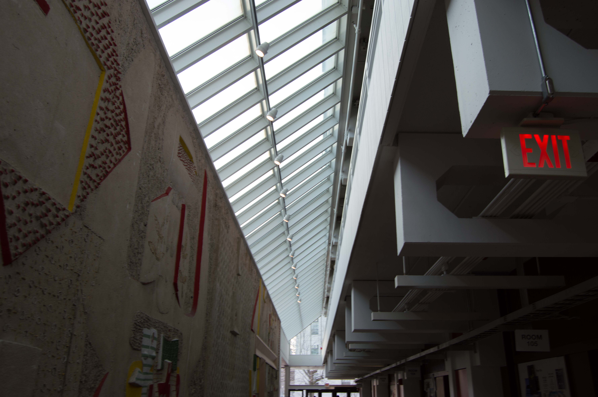
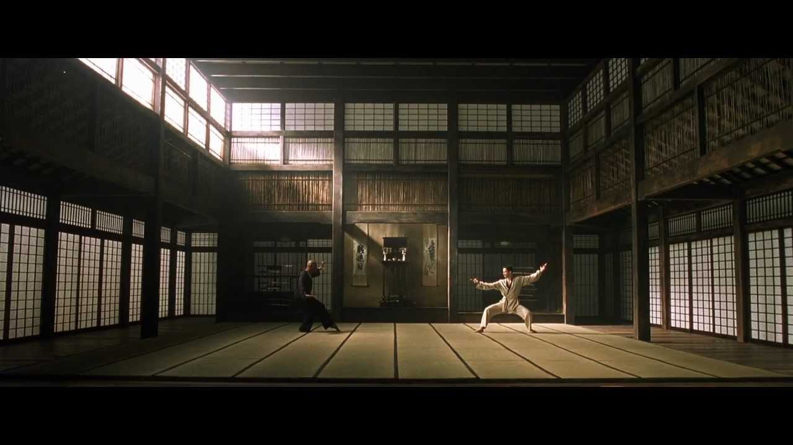

Culture/Context
"[I have] nothing against artificial light, but natural light is more interesting because its not perfect, its not entirely predictable" - Renzo Piano
Light serves the basic necessary ingredient to human vision, but in many ways also defines
the character and context of space. Visual impressions created by light can serve as a proper
basis for evaluating, defining, and creating emotional and artistic expression through architecture.

Using natural light, or “daylighting”, is the practice of using windows or other openings to provide
internal lighting. Besides normal ground-level windows, natural lighting is often created with clerestory
windows (windows that are placed high on top of a building) and skylights, as well as using large covered
atrium spaces. The atrium has increasingly become a popular architectural form, as they accentuate space
and light, and allows users simulate an external environment while keeping dynamic interior spaces
that emphasize comfort and usability. In terms of lighting, atria often find themselves at the
intersection between natural and artificial lighting, as the architect attempts to harness
massive amounts of sunlight while still maintaining control over the look and feel of the interior space.
Harvard Art Museums
The Harvard Art Museums are three art museums that integrated under a single institution in 1983.
In 2014 the museum was renovated by architect Renzo Piano, and among other changes, Piano added a glass,
pyramidal roof as part of the iconic Calderwood Courtyard. Piano had previously worked on buildings such as
Centre Georges Pompidou in Paris,
the Shard in London,
and the Whitney Museum of American Art in NYC.
As an architect
immensely focused on using natural lighting in modern design, it's unsurprising the Museums have been acclaimed as
as a "light machine", and a "glass lantern".
The focal point of the renovation is the iconic Calderwood Courtyard, where the giant skylight manages to
disperse light through the conservation lab, art study center, and central circulation corridors. However,
as typical of atrium spaces, the natural light only plays one of many roles in the lighting design. The
natural white light is juxtaposed against soft yellowy artificial lighting, creating a contrast between
interior (the inner halls of the museum) and exterior (the courtyard).

The dangling lights in the courtyard point up as well as down, illuminating not only the floor below
them but also the ceiling above, highlighting the interior “enclosed space” as opposed to the natural
sky. There is a feeling of classical to modern as one traverses up the structure. The lower floors
are made of travertine stone, the middle floors use lights illuminating the ceiling to simulate
the look of travertine, and the upper floors are almost fully while due to lack of lights reflecting
on the ceiling, and the abundance of natural light hitting the walls.
While the first two floors use traditional columns and arches facing the courtyard, the upper floors
use a sheet of glass to divide the galleries and the courtyard. The reflective glares of the glass
enclosures serves to create a sense of control over the sky, containing light and reflecting it within
a centerpiece at the top of the building.
All courtyard lights either point directly up or down, emphasizing and focusing the user’s
experience on the vertical nature of the atrium. Rather than natural light dispersing every
which direction, one can more easily imagine a column of natural light falling directly on top
of the yard.

Contextual Experience
The effect of Piano's glass lantern provides more meaning than that which meets the eye. The artist
has stated that the key to museum buildings is openness, and inviting people to enjoy and share value
with one another. In essence, lighting in museums points towards a loftier goal of cultural accessibility,
which Piano makes a point to emphasize, versus traditional dark museums that may evoke a sense of intimidation.
Aside from saving energy, atria utilizing both natural and artificial lighting give user experience dedicated
to a different experience of comfort. Rather than emphasizing ambient artificial lighting akin to candlelight,
natural light presses the individual closer to the outside environment; it's unpredictable, imperfect, and
constantly changing. It trades control for a type of primal comfort.
Museum's aren't the only spaces that emphasize such design - natural lighting and atria present itself across
building design for workplaces, schools, homes, and many others.
The Harvard Science Center was constructed in 1972 by ex-dean of GSD, Catalan architect, Josep Sert.
In an effort to break away from Georgian styles Harvard has focused on for many decades, Sert opted for
plentiful natural light, including a center space much akin to the Calderwood Courtyard.
Sert, similar to Piano, had envisioned the campus to be an integral part of the urban environment around it,
hence the coolness of the lighting, and its, arguably heavier reliance on natural light than Piano's courtyard.

As expected from a science building, the architecture speaks volumes to a space that fosters modern open spaces for
open space collaboration, innovation, and enlightenment.
Openness in Culture
In media, it seems like artists gravitate towards naturally lit, large spaces to conveny a range of emotions:
grandiosity, innovation, and even fear, or exoticism.
In the 2015 movie Room, the protagonists are trapped in a small claustrophobic space, with nothing but a skylight.
Natural light is seen as hope, escape, mystery.

The Matrix and Skyfall use ideas of open space to express anxiety, excitement, and even fear.